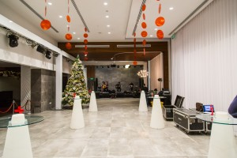

<div class="card">

    
    
    <div class="card-body">
      <p class="card-text">
     
        Our philosophy.
        
        Event Diary is an event logistics and marketing company which was formed back in 2016. The company offers A-Z event planning services from a team of experienced and energetic event Diarys, suppliers, venues and more. One of the main reasons behind the success of Event Diary is the fact that the team does not charge fees to its clients! With the number of events we organise, Event Diary Ltd does not need to add exorbitant fees and mark-ups to make its profit margins. This ensures that our clients list, which is constantly growing, make regular use of our services.
        
        There is no fee. There is no mark-up!
    </p>

    <p class="card-text">
        The Event Diary team does not charge any fees to its clients*. Yes, this might sound strange. However, the company earns its profits through its suppliers, with whom a very strong relationship has been built. This does not mean that the costs are up-marked to make up for the fee. On the contrary, they are less than it would cost a company when booking directly. We know it sounds too good to believe, but over the years this formula has helped the Event Diary team become the success story they are today. This has not in any way reduced the level of professionalism with which the services are carried, as shown by the large number of local and international clients,  who work with us on a regular basis.
        
        In a nutshell, you pay no fee, pay your supplier less and have a professional team handling all your loose ends. Sounds too good, but it is true! You can check out our clients as testimonials
    </p>
        <p class="card-text">   
     
        
        The Event Diary team is made up of a mix of people. James and Ilona take care of corporate events. Josette is the wedding guru. Nicole is the creative one. Sergio is the merchandise expert. In addition to this group of people, a large support team helps out in everything the company does, in office work to on-site logistics planning. One thing we can truly say about our team is that we are very passionate about our job!
     </p>
    </div>
  </div>